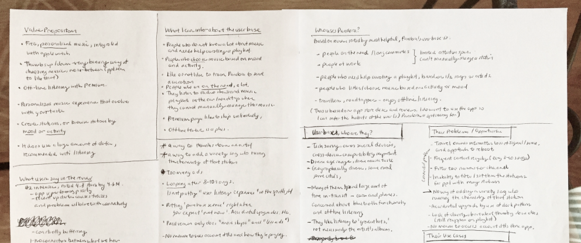
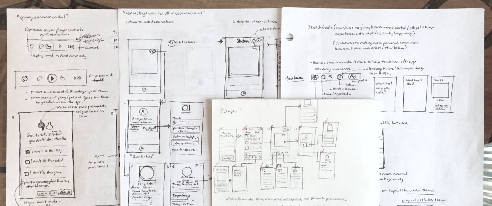

ROLES
- For this solo design challenge, I assumed the following roles:
- User Experience Designer
- User Interface Designer
DELIVERABLES
- High-fi mockup
- Hand-sketched wireframes
- Heuristic evaluation
SPECIFICATIONS
- Duration:
- 12 hours
- Tools:
- Figma
- Pen and paper
Overview
This project is a 12-hour design challenge that I completed as part of a job application process. This submission advanced me to the final interview round for a User Experience Designer position at a construction project-management software company, and later on the job offer as well.
Please note that this design exercise was not solicited by Pandora. All product observations, heuristic evaluations, and design opinions are my own and does not reflect the views of Pandora.
Why a reconsideration of Pandora?
I saw this design challenge as an opportunity to improve my product intuition by taking apart an existing product in order to find certain areas where the user experience of the product can be improved. The prospect of studying a music-streaming service like Pandora and gaining insight into its user base intrigued me because it is a service that I rarely use and thus better equipped to make an objective evaluation of.
Design process
First, I evaluated the current state of the product by defining the value propositions of the app through an understanding of its user base. This was achieved by finding patterns in the most helpful user reviews in the app store. Second, I identified three key pain points and explain why there is a need to resolve them. Last but not least, I did a partial redesign the Pandora app interface to address the following user pain points:
Pain point 1—Unpredictablity in the outcome of one’s interactions with the feedback system
Pain point 2—Low discoverability of high-value features
Pain point 3—Barriers to making a human-to-human connection during music discovery
Pandora—a product redesign exercise
My reconsideration of the Pandora radio app focuses on giving users greater control over their radio-listening experience and reducing friction in the music-discovery experience.
Here is a preview of the proposed redesign:
Home Screen
A proposed redesign of Pandora’s home screen—where frequently-accessed locations are accessible along a bottom navigation tab bar, thereby flattening the app-architecture and simplifying the user interface without sacrificing discoverability.
Modal Feedback
A proposed redesign of Pandora’s feedback system where users can distinguish between disliking a song, an artist, or an entire musical genre. This allows users to leave more targeted feedback to better their radio listening experience.
Evaluating the Pandora app
Pandora’s value propositions
In addition to scrutinizing user feedbacks, I validated Pandora’s main value propositions by conducting two user interviews—one with a Pandora user and one with a user of Spotify (Pandora’s chief competitor).
After identifying patterns in the data I gathered, I validated that the following are the chief value propositions that the Pandora music app offers:
“A personalized music experience that evolves with your taste.”
“Easily create custom radio stations based on an artist or song that you love.”
“Actively control your listening experience through a ‘thumbs’ feedback system.”
Understanding Pandora’s user base
After combing through 20+ user reviews and conducting 2 user interviews, I was able to gather enough data to detect patterns in users’ behaviors and mindset—enough to paint a picture of Pandora’s existing user base.
A profile of Pandora’s user base
Further analysis of user feedback and testing the Pandora app for myself yielded more insights into the shared behavioral traits and characteristics that distinguish Pandora’s existing user base.
Insight 1
They want ‘controlled variety’ in their music-listening experience.
A binary “thumbs system” is conducive for creating homogenous playlists that are unfriendly to variety. User feedbacks indicate that unpredictability in how the station algorithm responds discourages them from disliking or liking a variety song for fear of ruining their stations.
Insight 2
Discovery of new music and artists are a critical part of their enjoyment of the app.
Pandora users are looking to discover new artists to diversify their playlists. The joy of discovering new artists with similarities to their favorites is a frequent praise for the app.
Insight 3
They want new artists and music to find them.
Pandora users exhibit a passive approach towards music discovery. This group does not actively seek out new music as they outsource that task to an algorithm.
Insight 4
They listen while multi-tasking or in-transit.
Pandora users tend to listen to music concurrently with another task that occupies their primary attention. Most use cases involve users who are in-transit, studying, or working.
Identifying users' pain points
After identifying repeating complaints found in Pandora's user reviews, I then sorted these user complaints under categorical themes. The following are the pain-point themes that emerged:
Pain Point 1
Unpredictablity in the outcome of one’s interactions with the feedback system
“I disliked a song because I did not like the artist. That ruined the chemistry of my station and forced me to start over from scratch.”
The inability to predict the outcome of “thumbing down” a song is a steady source of pain among users. Currently, the binary system of “thumbs up or down” does not distinguish between disliking a song, an artist, or an entire musical genre.
This is the most severely-felt pain point in a user base that values personal control over their radio-listening experience. This is also a breach in a critical value proposition of Pandora.
Pain Point 2
Low discoverability of high-value features
“I did not realize that I have to conduct a search for the artist in order to start a new radio station.”
The low discoverability of top-level hierarchies and critical features that support the music-discovery experience causes users to miss out. Critical notifications, social feed updates and settings are all hidden inside a catch-all hamburger menu.
Moreover, users must conduct an artist search in order to start a radio station. This counter-intuitive flow presents a barrier of learning that may frustrate new users, who may just give up and take their businesses elsewhere.
Pain Point 3
Barriers to making a human-to-human connection during music discovery
“I wish I don’t have to jump to YouTube to see more music by this artist and share it with my friends.”
Pandora’s interface makes it difficult for users to make a personal connection with artists and to share their discovery with friends—because doing so forces them to switch platforms, thereby interrupting their listening enjoyment.
There are also many barriers to artist discovery (such as lackluster artist bios that omit artist’s discography) that force users to switch to a different platform to find more information, which introduces the risk that Pandora users may just take their business elsewhere.

Discovering the real problems
To further empathize with Pandora’s user base and validate the existence of these pain points, I explored the Pandora radio app for myself. Experiencing the pain points personally and acquainting myself with the Pandora app environment enabled me to discern the true origins of these pain points.
Here is an outline of my attempt to trace the origin of user pain points:
Tracing Pain Point 1
Pain point 1—
The inability to predict the impact of thumbing down a song on a music station
Origin of pain point 1—
A system that behaves inconsistently with users’ expectations and hides the outcome of users’ actions
Tracing Pain Point 2
Pain point 2—
Low discoverability of top-level hierarchies and critical features that support the music-discovery experience
Origin of pain point 2—
Simplicity in the user interface is achieved at the expense of the discoverability of critical features
Tracing Pain Point 3
Pain point 3—
An interface that makes it difficult for users to make a human connection with artists and other users
Origin of pain point 3—
A personalized music discovery experience that is impersonal and leaves little room for sharing
Design goals
An awareness of the true origins of users’ pain points enabled me to define the high-level design goals for addressing the three pain points identified.
Design goal 1
Make the actual outcome of user interactions with the system more consistent with user expectations.
Design goal 2
Increase the discoverability of features that are critical to the music listening and discovery experience.
Design goal 3
Promote user engagement by removing barriers to making personal connections and to sharing music discoveries.
Exploring possible solutions
With high-level design goals in mind and a general solutions strategy, I then proceeded to iterate towards a solution through a series of hand-sketched wireframes.
Design improvements
After sketching revisions of the user interface that would meet the three primary design goals, I proceeded to draft the redesigned screens at higher fidelity.
For each screen revision, I outlined the strategy behind the redesign. I then diagramed my thought process in a series of side-by-side comparisons of the current and proposed screen designs.
Strategy for Design Goal 1—
Give users greater control over their music-listening experience by allowing them to give more detailed feedback.
Strategy for Design Goal 1—
Create a feedback mechanism that better communicates how the system will react to user input.
Strategy for Design Goal 2—
Provide an obvious path for frequent use-cases such as creating a new music station and viewing notifications.
Strategy for Design Goal 2—
Locate frequently-used action buttons where users expect to find them.
Strategy for Design Goal 3—
Give more meaningful information about artists at the right time and in the right amount.

Strategy for Design Goal 3—
Enable users to share music discoveries with friends on Pandora, and off Pandora.
Stretch goals
Artist pages that are conducive for listeners to connect with and support artists
Pandora needs to create a more artist-friendly platform. A great start towards that would be in creating artist bio pages that encourage users to make a personal connection with the artist—by prioritizing an artist’s tour activity or full discography and directing users to purchase the artist’s track.
Give listeners the option to choose which stations to shuffle
Perhaps Pandora can offer the option to shuffle between specific stations in the paid versions of Pandora—this helps increase serendipitous discoveries (artists that straddle two genres) and gives users greater control over their listening experience.
Make room for more serendipitous music discovery with a listener feature
Pandora’s user base are composed of music listeners who like to passively discover artists as opposed to actively researching for new music. Why not facilitate serendipitous music discovery by incorporating a “Shazaam-like” listener feature? Also, this feature may potentially expand Pandora’s user base.
Closing thoughts
Due to the 12-hour limit on the design-challenge, I focused on evaluating the existing product through scrutinizing user feedback patterns, and synthesizing high-level design goals that guided the design improvements to address users' pain points.
If I had more time for this exercise, I would have included a thorough competitive analysis of Spotify (Pandora's chief competitor), and conducted additional in-depth interviews to validate my assumptions behind user behavioral patterns before wireframing solutions. I would also test my design solutions with at least two rounds of user testing, and concept-test future product ideas like adding a listener feature to Pandora.